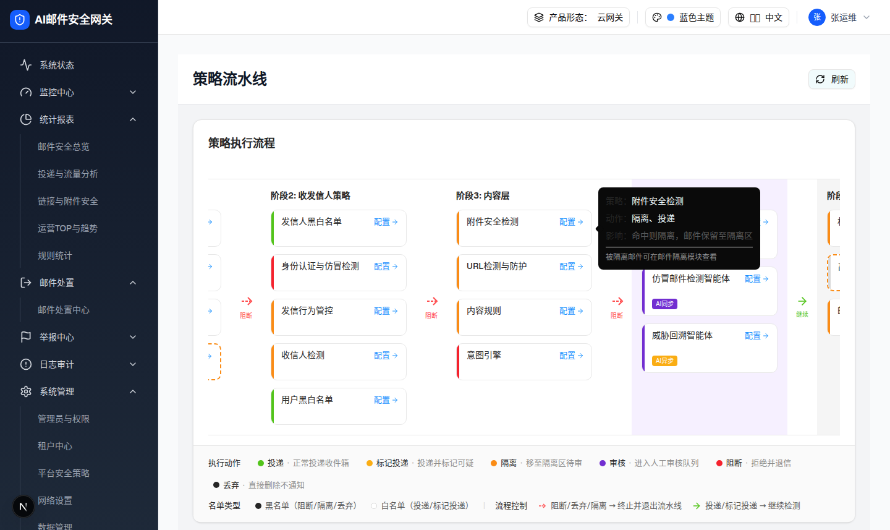

2.1 策略流水线入口卡片 Attachment Policy Card
| 交互层级 | 层级0：页面默认态中的策略入口卡片 |
|---|---|
| 触发路径 | 打开 /filter-rules/pipeline，在阶段3内容层定位「附件安全检测」卡片。 |
| 可点击目标 | 卡片整体与「配置 →」按钮共用打开逻辑：setContentDrawerPolicy("attachment") + setContentDrawerOpen(true)。 |
| Hover Tooltip | 浏览器实测悬浮 1.2s 出现：「策略：附件安全检测 / 动作：隔离、投递 / 影响：命中则隔离，邮件保留至隔离区 / 被隔离邮件可在邮件隔离模块查看」。 |
0交互层级 0：策略卡默认态（hover 显示 Tooltip，点击跳转 2.2）
附件安全检测
配置 →
策略：附件安全检测
动作：隔离、投递
影响：命中则隔离，邮件保留至隔离区
被隔离邮件可在邮件隔离模块查看
动作：隔离、投递
影响：命中则隔离，邮件保留至隔离区
被隔离邮件可在邮件隔离模块查看

| 元素 | 实际文案/属性 | 交互行为 | 备注 |
|---|---|---|---|
| 卡片标题 | 附件安全检测 | 点击卡片整体打开内容策略抽屉并选中附件安全检测 | i18n key pipeline.attachmentSecurity |
| 配置入口 | 配置 →（ArrowRight 12px） | 同卡片点击（stopPropagation 后走同一分支） | i18n key pipeline.configBtn |
| 左侧色条 | 橙色 #fa8c16，宽 4px | 无独立交互 | 由 type = configurable 推导（隔离） |
| 今日统计 | 卡片上不显示；数据存在于 policy 定义（todayHits 78 / blocked 60 / exempted 18），仅供 Tooltip/统计 | - | 极简卡片「零信息展示，纯导航入口」 |
DOM 树比对结果
| 比对项 | demo 实际 DOM | 提取/预览 HTML | 是否一致 |
|---|---|---|---|
| 根节点 | div.w-[220px].h-[60px].cursor-pointer，子节点 2，节点总数 9 | a.preview-card（220×60，色条 + 主体两个子块） | 一致（结构等价复刻） |
| 文案 | 「附件安全检测\n配置」 | 「附件安全检测 / 配置 →」 | 一致 |
| 色条 | div.w-1.bg-[#fa8c16] | .preview-bar 橙色 4px | 一致 |
| Tooltip | Radix Tooltip，delayDuration 300ms，side=right | CSS hover 浮层，同文案 | 一致（触发方式简化为纯 CSS） |